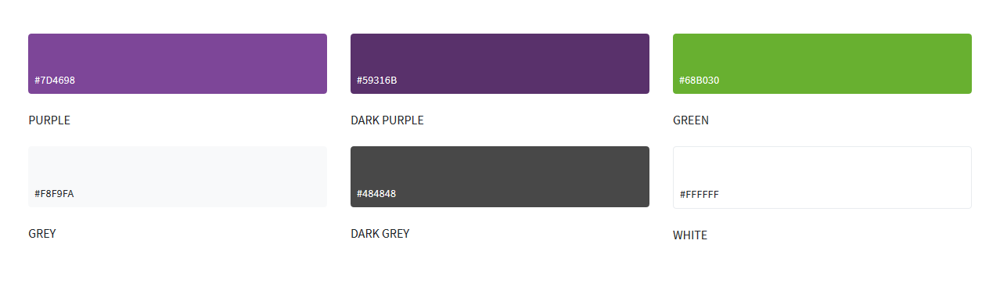
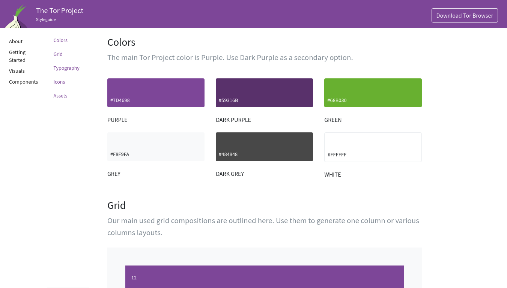
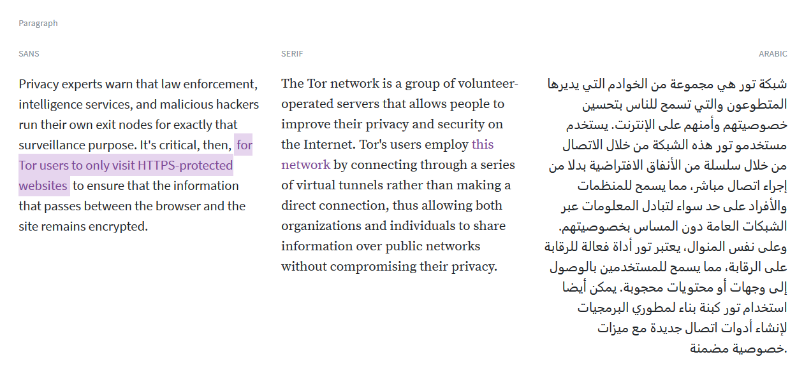
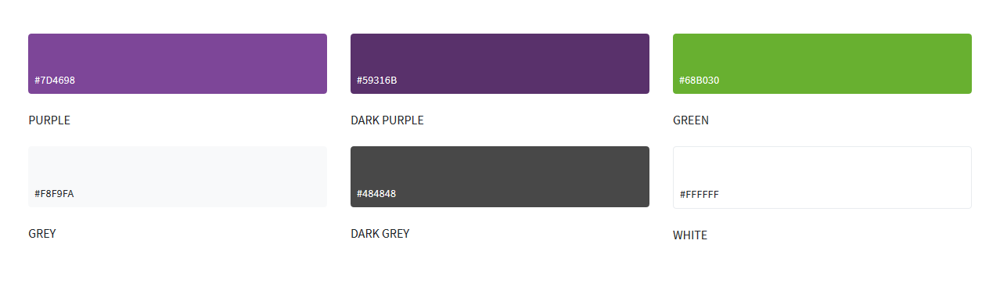
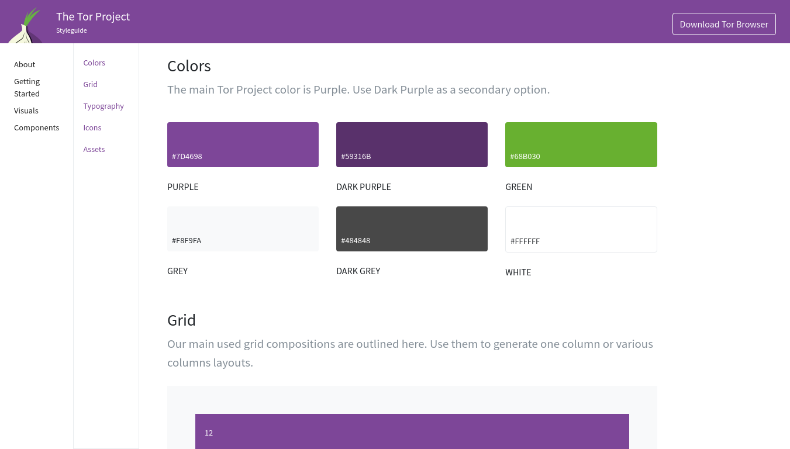
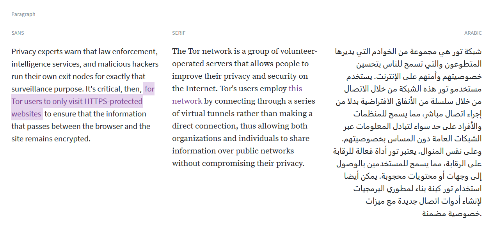

The Tor network is a group of volunteer-operated servers that allows people to improve their privacy and security on the Internet. Tor's users employ this network by connecting through a series of virtual tunnels rather than making a direct connection, thus allowing both organizations and individuals to share information over public networks without compromising their privacy.
Date
September, 2016
Clients
Category
Style Guide
Sources
 Identihub
IdentihubWebsite